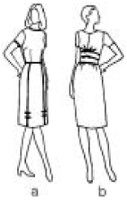
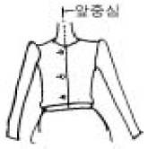
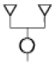
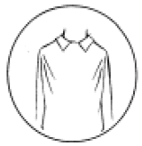
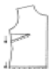
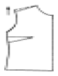
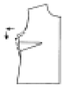
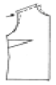
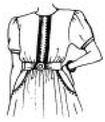

패션디자인산업기사 (2005-03-20 기출문제)
1과목: 피복재료학
1. 열전도율이 가장 좋은 섬유는?
- 면
- 견
- 양모
- 아마
(정답률: 알수없음)

2. 섬유내의 비결정(amorphous 非結晶)부분이 작용하는 역할을 올바르게 설명한 것은?
- 섬유에 강도를 준다.
- 섬유에 염색성을 준다.
- 섬유에 내약품성을 준다.
- 섬유에 형태안정성을 준다.
(정답률: 알수없음)
3. 마섬유의 성질을 설명한 것으로 잘못된 것은?
- 건조가 빠르다.
- 강도가 크다.
- 탄성이 우수하다.
- 흡습성이 좋다.
(정답률: 알수없음)
4. 무광택 인조섬유를 만드는 방법은?
- 습식방사를 한다.
- 방사원액에 이산화티탄(TiO2)을 넣는다.
- 방사구를 좁게 한다.
- 연신(drawing)을 반복한다.
(정답률: 알수없음)
5. 양모섬유에 견뢰도가 양호하고 염색이 잘되는 염료는?
- 직접염료
- 산성염료
- 환원염료
- 분산염료
(정답률: 알수없음)
6. 면양을 각 부분별로 전모(shearing)하여 마치 1 매의 모피와 같은 형태로 하여 얻어진 것을 무엇이라 하는가?
- 플리스(Fleece)
- 탄화양모(Carbonized wool)
- 켐프(Kemp)
- 스킨울(Skin wool)
(정답률: 알수없음)
7. 합성섬유를 사용하여 만든 제품이 양털의 제품과 제일 비슷한 성상을 나타내는 섬유는?
- 라이크라
- 데이크론
- 아라미드
- 엑슬란
(정답률: 알수없음)
8. 삼베는 어떤 섬유로 만들어진 직물인가?
- 무명(cotton)
- 대마(hemp)
- 아마(flax)
- 황마(jute)
(정답률: 알수없음)
9. 방사공정 중 배향성이 주로 일어나는 것은?
- 연신
- 사출
- 고화
- 중합
(정답률: 알수없음)
10. 주성분이 셀룰로스인 섬유는?
- 폴리에스테르
- 폴리아미드
- 아크릴
- 아세테이트
(정답률: 알수없음)
11. 여름철 한복에 많이 쓰이는 갑사는 어떠한 조직으로 제직 되었는가?
- 여직
- 평직
- 수자직
- 사직
(정답률: 알수없음)
12. 다음 중 수자직의 특성을 설명한 것은?
- 사문선이 있다.
- 교차점이 가장 많다.
- 부드럽고 매끄럽다.
- 표리가 없다.
(정답률: 알수없음)
13. 나일론 실의 무게가 3g 이고, 길이가 1000m 이면 이 실의 데니어는?
- 27 denier
- 30 denier
- 270 denier
- 300 denier
(정답률: 알수없음)
14. 단백질 섬유의 일반적인 성질 중 관련이 없는 것은?
- 우수한 탄성
- 습윤시 강도 저하
- 낮은 흡수성
- 일광에 황변 현상
(정답률: 알수없음)
15. 양모제품은 사용중에 수축되는데, 이러한 수축을 방지하기위하여 양모의 스케일의 일부를 약품으로 용해하거나 합성수지로 피복하는 가공은?
- 런던 슈렁크
- 축융방지가공
- 샌포라이즈 가공
- 시로셋 가공
(정답률: 알수없음)
16. 다음 중 경위사의 조직점을 비교적 적게 하여 직물의 표면을 경사 또는 위사만 돋보이게 한 직물은?
- 평직
- 능직
- 변화능직
- 주자직
(정답률: 알수없음)
17. 실험식이 CH2 이며 중합하여 고분자 화합물을 생성하는 것은?
- 셀룰로스 섬유
- 폴리에틸렌계 섬유
- 단백질 섬유
- 폴리에스테르계 섬유
(정답률: 알수없음)
18. 다음중에서 양모가 가장 많이 용해되는 액은?
- 5% 수산화나트륨 100℃용액
- 70% 황산 25℃용액
- 100% 아세톤 25℃용액
- 메타크레졸 100℃용액
(정답률: 알수없음)
19. 견(silk)의 증량에 주로 사용하는 약제는?
- 활석
- 주석
- 페놀
- 황산마그네슘
(정답률: 알수없음)
20. 방향 마찰차(directional friction effect)를 유발시키는 것은?
- 메듈라(medulla)
- 스케일(Scale)
- 코르텍스(Cortex)
- 크림프(Crimp)
(정답률: 알수없음)
2과목: 패션디자인론
21. 디자인 원리 중 통일을 활용하는 의미로 가장 적당한 것은?
- 한가지 색으로만 단일하게 사용하는 것
- 꼭 한가지 재료만으로 사용하여 일체감을 이루는 것
- 오로지 한가지를 정하고 이에 맞추어 디자인 하는 것
- 서로 다른 것 끼리 일체감의 공통적인 성격을 분산시키지 않고 질서있게 하는 것
(정답률: 알수없음)
22. 다음 중 연필 사용에 대한 설명으로 틀린 것은?
- 6B는 딱딱하고 4H는 강한 선에 적합하다.
- HB나 H가 화지에 자연스럽게 먹힌다.
- 지우개 사용 시 화지를 상하지 않도록 주의한다.
- 6B에서 H까지 다양한 종류를 사용할 수 있다.
(정답률: 알수없음)
23. 복식을 사람이 착용하는데 있어서 갖추어야 하는 조건 중 가장 적당한 것은?
- 입어서 아름답기만 하면 된다.
- 나 자신보다 남의 시선에 신경을 쓰도록 한다.
- 입어서 편하기만 하면 된다.
- 인체 생리기능과 미를 나타내는 효과가 있어야 한다.
(정답률: 알수없음)
24. 현대복식 중 X자형 실루엣이 유행했던 시기는?
- 1940년대 말
- 1950년대 말
- 1960년대 말
- 1970년대 말
(정답률: 알수없음)
25. 다음 중 방사상 리듬이 가장 쉽게 적용될 수 있는 것은?
- 핀턱
- 포켓
- 프릴
- 네크라인
(정답률: 알수없음)
26. 디자인의 착시개념이 옳게 설명된 것은?
- 디자인을 착각하여 만드는 것
- 기능의 반대 개념으로 미를 전적으로 추구하는 것
- 사물의 본래의 모습을 다르게 보이도록 하는 효과
- 가능한 실제에 가깝게 보이도록 하는 것
(정답률: 알수없음)
27. 사선을 통해 얻을 수 있는 느낌이 아닌 것은?
- 활동성
- 극적
- 불안정
- 침착
(정답률: 알수없음)
28. 황색(yellow)에 대한 내용 중 틀린 것은?
- 밝고 명쾌한 분위기이다.
- 청색과의 배색에서 개성이 돋보이는 색이다.
- 평화와 휴식을 주는 색이다.
- 결혼한 여자의 치마저고리의 전통적 배색이다.
(정답률: 알수없음)
29. 디자인의 조건은 무엇인가?
- 적당하게 비싸면서 이익을 남기는데 우선하여야 한다
- 만들기가 쉬운 것을 우선 조건으로 하고 사회의 관습을 고려하면 좋은 디자인이다.
- 기능성 보다는 아름다움에 더 치중하여 팔리는 것을 전적으로 고려되어야 한다.
- 제품의 기능성, 심미성, 창조성과 적절한 경제성이 있어야 한다.
(정답률: 알수없음)
30. 8 등신의 여성을 9 등신의 이상적인 체형으로 표현하려 한다. 어느 부분을 길게 표현하는가?
- 다리 부위
- 가슴 부위
- 허리 부위
- 힙 부위
(정답률: 알수없음)
31. 다음 중 구성선으로만 연결한 것은?
- 포켓, 트임, 개더
- 핀턱, 다트, 커프스
- 개더, 트임, 칼라
- 솔기, 다트, 트임
(정답률: 알수없음)
32. 바우하우스의 교육내용으로 맞지 않는 것은?
- 인생을 총합적으로 보는 인간형 교육
- 낡은 역사적 전통양식에서 탈피
- 예술과 기술의 통합
- 예술다운 예술의 창조
(정답률: 알수없음)
33. 의상디자인에서 선(line)에 대한 설명으로 맞는 것은?
- 단추의 배열에서 생기는 흐름은 선이 아니다.
- 움직임에 따라 여러 형태로 변화한다.
- 옷감의 무늬는 의복으로 표현되는 선의 성격을 결정하는 중요한 요인은 되지 못한다.
- 실루엣과는 관계가 없다.
(정답률: 알수없음)
34. 다음은 선에 의한 착시 현상을 설명한 것이다. 옳은 것은?
- 사선의 각도가 45°인 체크스커트(check skirt)는 착시 현상을 거의 느낄 수 없으므로 체형을 가리기에 적당하다.
- 어깨에 패드를 넣어 크게 강조하면 그만큼 허리도 굵어 보인다.
- 겹 여밈된 재킷의 경우, 단추의 수가 많고 가로 간격이 넓을수록 날씬해 보인다.
- 상의와 하의가 다른 색인 콤비는 재킷의 밑단선에 의한 가로 효과로 키가 커 보인다.
(정답률: 알수없음)
35. 다음 그림은 디자인 강조가 잘 적용된 예와 그렇지 않은 예를 보여주고 있다. 이를 잘 설명한 것은?

- (b)는 (a)에 비해 강조점이 허리의 위에 집중되어 착용자를 더욱 돋보이게 한다.
- (a)는 (b)에 비해 황금 분할을 잘 적용하고 있다.
- (b)는 (a)에 비해 변화있는 균형감을 형성하여 디자인에 부드러운 느낌을 주었다.
- (a)는 (b)에 비해 네크라인과 소매 등에 트리밍을 반복 사용함으로써 통일감을 주었다.
(정답률: 알수없음)
36. 다음 중 유행주기(fashion cycle)에 가장 적게 영향을 미치는 것은?
- 실루엣
- 개인의 심리상태
- 색상
- 정치, 경제 상황
(정답률: 알수없음)
37. 재질이 특이한 옷감으로 디자인하고자 할 때 가장 좋은 방법을 설명한 것은?
- 명도가 높은 색채를 선택한다.
- 장식을 사용하여 강조한다.
- 색상을 다양하게 사용한다.
- 선과 형을 단순하게 처리한다.
(정답률: 알수없음)
38. 다음 그림에서 틀린 곳은 어디인가?

- 앞 여밈 위치
- 소매 달림 위치
- 단추 구멍
- 네크라인
(정답률: 알수없음)
39. 기하학 문양으로 의복을 디자인할 때 고려해야 할 점은 무엇인가?
- 포켓이나 장식 디자인을 많이 한다.
- 가능한 디자인 라인을 많이 준다.
- 절개선을 여러 방향으로 잡는다.
- 문양의 방향을 맞추는데 고려한다.
(정답률: 알수없음)
40. 콘트라스트(Contrast) 배색이 아닌 것은?
- 빨강과 녹색
- 연두와 초록
- 귤색과 남색
- 노랑과 보라
(정답률: 알수없음)
3과목: 의류상품학 및 복식문화사
41. 남·여 성차가 의상에 뚜렷이 나타나기 시작한 시기는?
- 고딕 시대
- 로마네스크 시대
- 비잔틴 시대
- 르네상스 시대
(정답률: 알수없음)
42. 다음의 패션 상품 분류방법 중 가격에 기본을 둔 것은?
- trend - new basic - basic
- advanced - up-to-date - established
- grade - prestige - better - volume
- romantic - feminine - casual
(정답률: 알수없음)
43. 다음 중 세계적인 소재 전시회는?
- I.W.S(국제 양모 사무국)
- 프로모스틸(Promostyl)
- 프리미에르 비죵(Premiere vision)
- 쁘레따 뽀르떼(Pr勍t-謙-porter)
(정답률: 알수없음)
44. 상품의 시각적 표현으로서의 디스플레이 방법 중 흡수된 고객을 구매시점에 이르게 하는 역할을 하는 것은?
- 윈도우 디스플레이
- 리모트 디스플레이
- 내부 디스플레이
- 외부 디스플레이
(정답률: 알수없음)
45. 새로운 패션이 많은 사람들에 의해서 입혀지고 다른 사람에게 보여짐으로써 대중에게 전파되기 시작하는 단계는?
- 상승기
- 쇠퇴기
- 절정기
- 도입기
(정답률: 알수없음)
46. 19 세기 후반의 복식 예술의 장르는?
- 사실주의
- 인상주의
- 초현실주의
- 아르데코
(정답률: 알수없음)
47. 세계 제1차 대전 직후 여성의 사회 참여로 변화된 스타일 중 틀린 것은?
- 보이쉬 스타일(boyish style)
- 미나레 스타일(minaret style)
- 걀손느 스타일(garsonne style)
- 플래퍼 스타일(flapper style)
(정답률: 알수없음)
48. 스페인에서 유래된 종형이나 원추형의 언더스커트로 여성의 스커트를 부풀리기 위하여 사용된 것은?
- 스토마커(stomacher)
- 코르셋(corset)
- 파딩게일(farthingale)
- 크라바뜨(cravatte)
(정답률: 알수없음)
49. 중세 중기 복식의 특징을 설명한 것이 아닌 것은?
- 의복은 몸에 꼭 맞는 형태로 변화되었다.
- 남녀의 기본 복식은 속옷 쉐엥즈 위에 블리오를 입고 위에 맨틀을 걸치는 것이었다.
- 이 시기에 동양의복의 평면 구성과 달리 입체적 구성으로 전환했다.
- 옷감을 재단이나 바느질을 하지 않고 신체에 느슨하게 걸칠 수 있는 의복형으로 발전시켰다.
(정답률: 알수없음)
50. 지배적인 라인이 없어지면서 디자이너들은 그들의 창작 의상을 좀더 뚜렷하게 나타내기 위해 자신의 상표나 이니셜이 새겨진 장신구, 모자, 신발 등을 의복과 조화시킬것을 권장하였던 시기는?
- 1950년 이후
- 1980년
- 1970년 중반
- 1990년
(정답률: 알수없음)
51. 기업의 마케팅 시스템의 핵심을 구성하는 투입변수의 결합을 기술하는 마케팅 믹스를 일컫는 용어로 맞는 것은?
- 3P's
- 4P's
- 5P's
- 4Q's
(정답률: 알수없음)
52. 패션 산업의 확산기에 나타난 디자인 현상이 아닌 것은?
- 클래식 → 로맨틱
- 하드 → 소프트
- 매니쉬 → 페미닌
- 모던 → 클래식
(정답률: 알수없음)
53. 로코코 시대의 여자 복식에 있어서 가장 귀족적이고 장식이 많은 궁중의 공식복인 것은?
- 로브 아라 뽈로네이즈(robe 'a la polonaise)
- 로브 아라 까라꼬(robe 'a la caraco)
- 로브 아라 프랑세즈(robd 'a la francaise)
- 색 가운(sack goun)
(정답률: 알수없음)
54. 국제 유행색 협회에서 유행색을 결정하는 시기로 맞는 것은?
- 36개월 전
- 24개월 전
- 18개월 전
- 12개월 전
(정답률: 알수없음)
55. 패션산업의 구조에 대한 설명으로 맞는 것은?
- 패션산업의 업스트림(up stream)은 남성복, 여성복 생산에 포함된다.
- 패션산업의 미드스트림(mid stream)은 각종 원사 생산이 해당된다.
- 패션산업의 다운스트림(down stream)은 각종 유통채널이 해당된다.
- 패션산업은 패션소재산업, 패션의류산업, 패션직물산업으로 구성된다.
(정답률: 알수없음)
56. 쉬르코의 설명으로 옳은 것은?
- 병사들을 위한 여자 복식이다.
- 13 세기의 대표적인 의복으로 남녀 모두가 입었다.
- 단추를 달아 상체에 꼭 맞게 만든 의복이다.
- 누빈 옷으로 갑옷 속에 입었고 후에는 남자들의 겉옷이 되었다.
(정답률: 알수없음)
57. 로마시대의 숄(shawl)과 같은 여성의 쓰개는?
- 스톨라(stolla)
- 거들(girdle)
- 팔라(palla)
- 히마티온(himation)
(정답률: 알수없음)
58. 인테리어 디스플레이 방법 중 낮은 무대처럼 약간 높이를 높이고 상품을 전시하는 방법은?
- 아일 디스플레이
- 벽면 디스플레이
- 쇼 케이스 디스플레이
- 섬 디스플레이
(정답률: 알수없음)
59. 다음중에서 로마의 대표적인 의복인 것은?
- 토가
- 테베나
- 히마티온
- 클라미스
(정답률: 알수없음)
60. 패션 마케팅의 핵심개념이 아닌 것은?
- 패션 벤처 및 투자
- 가치와 만족
- 패션 상품 및 패션 시장
- 필요와 욕구
(정답률: 알수없음)
4과목: 패턴공학 및 의복구성학
61. 다음 설명 중 틀린 것은?
- 길원형 앞면에서 BP(bust point)는 다트의 위치를 결정하는데 가장 중요하다.
- 길원형 뒷면에서 다트는 견갑골의 돌출로 인하여 생긴다.
- 프린세스 라인(princess line)은 2개의 다트가 이어져 생긴다.
- 길원형에서 앞,뒤면 공통적인 다트는 숄더다트와 센터다트이다.
(정답률: 알수없음)
62. 가슴둘레 계측 방법 중 맞는 것은?
- 계측용 판을 준비하여 앞가슴에 대고 수평으로 돌려잰다.
- 유두를 수평으로 지나서 줄자를 대고 당겨서 잰다.
- 유두 위 부분의 가장 굴곡진 부분을 당겨서 잰다.
- 유두를 지나 수평으로 줄자를 당기지 않고 그대로 잰다.
(정답률: 알수없음)
63. 다음중에서 생산 시스템을 세분화하는 방식으로 적절치 않는 시스템은?
- 번들 시스템(bundle system)
- 싱크로나이즈 시스템(synchronized system)
- 딜레이드 시스템(delayed system)
- 콘베어 시스템(conveyer system)
(정답률: 알수없음)
64. 안감을 넣지 않는 코트나 자켓의 시접처리에 사용되는 방법은?
- 지그재그 가름솔
- 휘감치기 가름솔
- 핑크드 가름솔
- 바이어스 싸기 가름솔
(정답률: 알수없음)
65. 옷감을 재단하는 방법으로 옳지 않은 것은?
- 큰 무늬가 있는 옷감은 좌우에 같은 무늬가 배열되게 배치한다.
- 벨벳, 골덴과 같은 직물은 상,하 같은 털결의 방향이 되게 한다.
- 체크무늬와 줄무늬는 무늬를 잘 맞추게 재단한다.
- 원형은 작은 부분부터 배치한다.
(정답률: 알수없음)
66. 의복구성을 위한 인체계측의 기준선에서 어깨끝과 앞겨드랑이점, 뒤겨드랑이점을 통과하는 곡선은 무엇인가?
- 진동둘레선
- 어깨솔기선
- 목밑둘레선
- 가슴둘레선
(정답률: 알수없음)
67. 다음의 공정기호는 무엇을 의미하는가?

- 큰 물건에 작은 물건을 조합할 때
- 같은 크기의 물건을 2개 조합할 때
- 작은 물건 2개를 조합할 때
- 큰 물건 2개를 조합할 때
(정답률: 알수없음)
68. 길 원형 제도시 필요치수가 아닌 것은?
- 소매길이
- 등길이
- 가슴둘레
- 어깨너비
(정답률: 알수없음)
69. 봉제공장의 가동률을 파악하여 작업개선과 작업의 표준시간을 정하는 시간측정방법은?
- 스톱워치를 이용한 직접시간 분석법
- Work Sampling법
- MTM (Method Time Measurement)법
- 필름시간 분석법
(정답률: 알수없음)
70. 다음 중 제도에 필요한 부호가 틀린 것은?
- 늘림 -

- 심감 -

- 맞춤 -

- 주름 -

(정답률: 알수없음)
71. 옷을 입었을 때 그림과 같이 어깨끝에서 당겨지는 주름이 생겼다. 올바른 패턴 수정은?





(정답률: 알수없음)
72. 패턴을 원단위에 놓고 재단한 다음 본봉에 들어가기 전 입체감을 주기위해 늘이는 부분과 오그리는 부분이 있다. 다음 중 오그리는 부분의 위치가 맞는 곳은?
- 슬랙스 옆선 허리선
- 밑위 밑선
- 슬랙스 무릎선
- 소매의 앞소매 옆선(팔꿈치선)
(정답률: 알수없음)
73. 다음 의복에서 이용된 주머니의 명칭은?

- 프런트 힙 포켓 (front hip pocket)
- 인 시임포켓 (in-seam pocket)
- 패치포켓 (patch pocket)
- 플랩포켓 (flap pocket)
(정답률: 알수없음)
74. 퍼커링(Puckering)이 가장 잘 발생할 수 있는 원인은?
- 봉제시 옷감에 비해 실의 굵기가 가늘 때 발생한다.
- 봉제시 윗실과 밑실의 장력이 약할 때 발생한다.
- 봉제시 밀도가 높은 소재에 굵은 바늘을 사용할 때 발생한다.
- 봉제시 스티치 구성에 있어 봉사의 길이가 길 때 발생한다.
(정답률: 알수없음)
75. 재봉바늘의 굵기와 관계가 없는 것은?
- 재봉틀의 종류
- 소재의 밀도
- 봉사의 굵기
- 소재의 두께
(정답률: 알수없음)
76. Heath - Carter에 의한 체형분류에서 체형등급 판정시에 필요한 인체 측정항목이 아닌 것은?
- 등피하 지방두께
- 복부피하 지방두께
- 엉덩뼈피하 지방두께
- 장딴지피하 지방두께
(정답률: 알수없음)
77. 다음 중 남자용 Suits collar에서 나온 말로 슈우트나 코트에 많이 이용되는 칼라는?
- 스포츠 칼라
- 셔츠 칼라
- 테일러드 칼라
- 케이프 칼라
(정답률: 알수없음)
78. 다음 칼라 중 제도방법이 다른 것은?
- 피터 팬 칼라
- 케이프 칼라
- 세일러 칼라
- 차이니즈 칼라
(정답률: 알수없음)
79. 겉감의 부위별 시접 중 가장 거리가 먼 것은?
- 어깨와 옆선 1.5-2cm
- 지퍼다는 곳 1cm
- 스커트 단 4-6cm
- 진동둘레 1-1.5cm
(정답률: 알수없음)
80. 재봉틀의 부품 중 봉제과정에서 천에 적당한 압력을 주어 규정의 땀을 원활히 형성될 수 있도록 해 주는 것은?
- 피이드 독(feed dog)
- 피이드 레규레이터(feed regulator)
- 프레셔 푸트(Presser foot)
- 침판(slide plate)
(정답률: 알수없음)